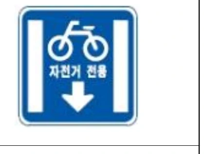

919. Cách nào là cách đi đúng trên làn đường được lắp biển báo an toàn sau?

- ①Xe trượt điện Kickboard được lưu thông trên làn đường lắp đặt biển báo này.
- ②Xe đạp điện không được lưu thông trên làn đường lắp đặt biển báo này.
- ③Chỉ xe đạp mới được lưu thông trên làn đường lắp đặt biển báo này.
- ④Xe ô tô được lưu thông trên làn đường lắp đặt biển báo này.
Xem đáp án
Đáp án
① Xe trượt điện Kickboard được lưu thông trên làn đường lắp đặt biển báo này.
Căn cứ
Phụ lục 6 Nội quy thi hành Luật Giao thông đường bộ, biển báo làn đường dành riêng cho xe đạp (biển chỉ dẫn số 318) được lắp đặt trên làn đường quy định chỉ cho xe đạp và thiết bị di chuyển cá nhân đi qua. Theo Điều 2 (Định nghĩa) của Luật Giao thông Đường bộ, xe đạp, v.v. là xe đạp và các thiết bị di chuyển cá nhân. Xe đạp là xe đạp và xe đạp điện theo Điều 2, Đoạn 1 và 1-2 của Đạo luật khuyến khích sử dụng xe đạp. Theo Điều 2-3 (Tiêu chuẩn đối với thiết bị di chuyển cá nhân) của Quy tắc thực thi Luật Giao thông đường bộ, xe scooter điện là thiết bị di chuyển cá nhân. Vì vậy, xe scooter điện có thể di chuyển trên làn đường dành riêng cho xe đạp.
Phần căn cứ là bản dịch máy để tham khảo.